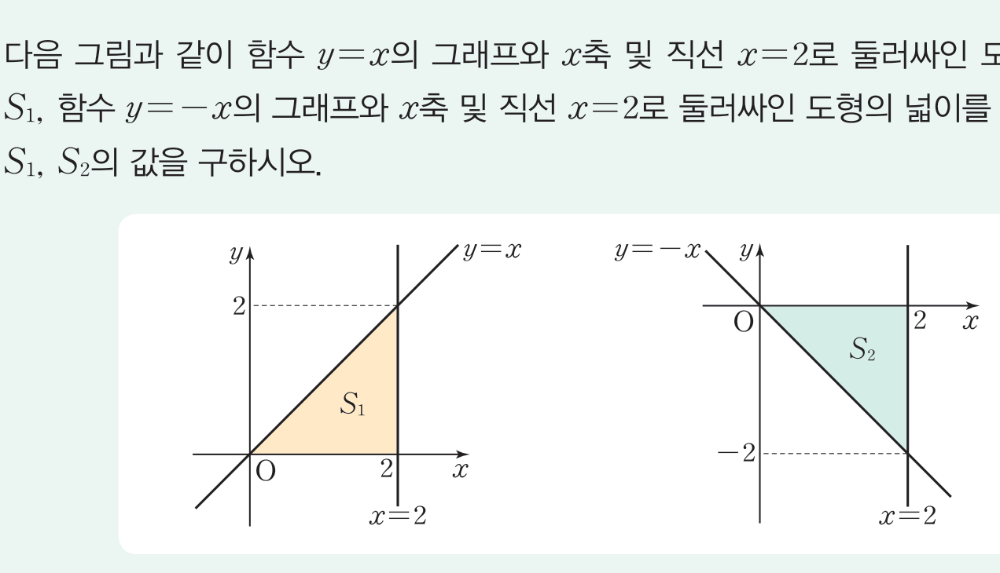
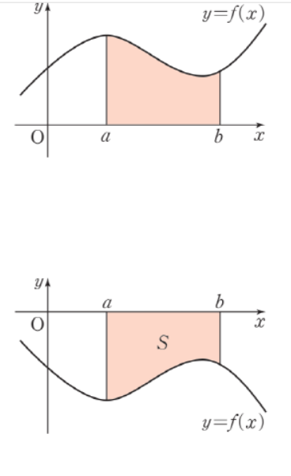
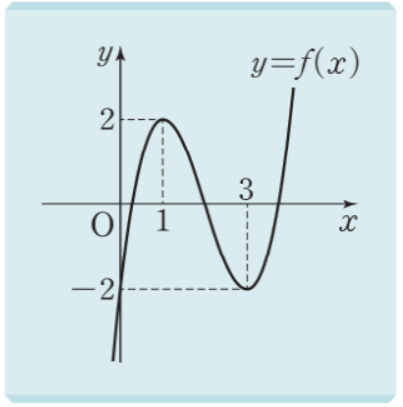

2026학년도 2학기 | 미적분 I
차시 22에서 우리는 "도함수에서 원래 함수를 복원"하는 부정적분을 익혔다. 오늘은 같은 적분 기호 \(\int\)을 한 점 \(a\)와 \(b\) 사이에서 사용하면 하나의 수(곡선 아래 넓이)가 나온다는 사실을 본다.
[개방형 발문] 아래 그림과 같이 직선 \(y = x\)와 \(x\)축, 직선 \(x = 2\)로 둘러싸인 삼각형 넓이를 \(S_1\)이라 하고, 직선 \(y = -x\)와 \(x\)축, 직선 \(x = 2\)로 둘러싸인 삼각형 넓이를 \(S_2\)라 하자. \(S_1, S_2\)의 값을 구하시오. (비상 미적분 I P.112 · 개념 탐구 참고)

[연결] \(S_1 = \dfrac{1}{2}\cdot 2 \cdot 2 = 2\), \(S_2 = 2\). 두 값은 같지만, 함수 \(y = -x\)는 닫힌구간 \([0, 2]\)에서 음수이다. 그래서 정적분 \(\int_0^2 (-x)\,dx\)는 그냥 \(2\)가 아니라 부호가 붙은 면적 \(-2\)가 된다. 오늘 우리는 ① 정적분 \(\int_a^b f(x)\,dx\)의 정의(기하적 의미), ② 부호 있는 면적의 약속(\(f \lt 0\) 구간, 양수·음수 혼합), ③ \(a = b\), \(a \gt b\)일 때의 규약, ④ 적분과 미분의 관계 \(\dfrac{d}{dx}\int_a^x f(t)\,dt = f(x)\)까지 익힌다.
닫힌구간 \([a, b]\)에서 연속인 함수 \(f(x)\)의 \(a\)에서 \(b\)까지의 정적분을 기호 \(\displaystyle\int_a^b f(x)\,dx\)로 나타내며, 다음 세 가지 경우로 정의한다 (단 \(a \lt b\)).

=0일 때 곡선 y=f(x), x축, x=a, x=b로 둘러싸인 도형의 넓이 S; 하단: f(x)<=0일 때 같은 영역이 x축 아래에 위치" class="block mx-auto max-w-xl w-full rounded-lg border border-slate-200" />핵심: 정적분은 "부호 있는 면적" — \(x\)축 위쪽은 \(+\), 아래쪽은 \(-\). \(a\)를 아래끝, \(b\)를 위끝이라 한다. 또한 변수 \(x\)는 임의의 문자로 바꿔도 값이 같다: \(\int_a^b f(x)\,dx = \int_a^b f(t)\,dt\). (비상 미적분 I P.112~113 · 정적분의 정의 참고)
정적분의 정의는 \(a \lt b\) 경우에만 직접 주어진다. 나머지 두 경우는 편의를 위한 약속으로 보충한다.
핵심: 위끝·아래끝을 바꾸면 부호만 뒤집힌다. 이 약속 덕분에 다음 차시에서 부정적분과 정적분을 연결하는 미적분의 기본정리가 \(a, b\)의 대소에 관계없이 한 줄로 성립한다. (비상 미적분 I P.113 · 약속 (1)(2) 참고)
함수 \(f(t)\)가 실수 \(a\)를 포함하는 열린구간에서 연속일 때, 위끝을 변수 \(x\)로 둔 정적분 \(\displaystyle\int_a^x f(t)\,dt\)는 \(x\)에 대한 함수이다. 이를 \(x\)로 미분하면 다음이 성립한다.
\( \displaystyle \dfrac{d}{dx}\int_a^x f(t)\,dt = \) \( f(x) \)
즉 위끝을 \(x\)로 두고 미분하면, 피적분함수의 변수를 \(x\)로 바꾼 \(f(x)\)가 그대로 나온다.
도출 근거: \(S(x) = \int_a^x f(t)\,dt\)일 때 \(\Delta x\)에 대한 \(\Delta S\)는 사이 영역의 넓이로, \(m\cdot\Delta x \leq \Delta S \leq M \cdot \Delta x\) (\(m, M\)은 닫힌구간의 최소·최대). 양변을 \(\Delta x\)로 나누고 \(\Delta x \to 0\)을 취하면 연속함수의 최대·최소가 모두 \(f(x)\)로 수렴 \(\Rightarrow\) \(S'(x) = f(x)\). (비상 미적분 I P.114~115 · 적분과 미분의 관계 참고)
🎯 즉시 활용
\(\displaystyle\dfrac{d}{dx}\int_2^x (3t^2 - 2t + 1)\,dt = \) \( 3x^2 - 2x + 1 \). — 적분 기호 안의 \(t\)를 \(x\)로 바꾸기만 하면 끝. (비상 미적분 I P.115 · 문제 02 참고)
"모든 실수 \(x\)에 대하여 \(\int_a^x f(t)\,dt = g(x)\)" 형태의 항등식이 주어지면 정해진 두 단계로 \(f, a\)를 모두 결정할 수 있다.
핵심: 적분 기호를 미분으로 없애는 STEP 1과, 위끝과 아래끝이 같으면 정적분 \(= 0\)이라는 STEP 2가 짝을 이룬다. 차시 22의 "양변 미분 \(\to\) 식 복원"과 같은 원리. (비상 미적분 I P.115 · 예제 2·문제 04 참고)
기하적 정의로 정적분 값을 계산하고, 적분과 미분의 관계를 적용하는 단계
함수 결정형에 미정계수 추가 — 좌·우 차수 비교 + 두 조건 동시 활용

"틀려야 는다!" 정적분 = 부호 있는 면적 — 음수 구간에서의 부호 함정
많은 학생이 "\(S\)와 \(I\)가 같다"라고 답한다. 그러나 \([-1, 0]\)에서 \(y = x \lt 0\)이고 \([0, 2]\)에서 \(y = x \gt 0\)이므로, 정적분은 두 부분을 부호를 살려서 빼고 더한다.
STEP 1 — 기하적 넓이 \(S\): \([-1, 0]\)의 삼각형 넓이 \(= \dfrac{1}{2}\), \([0, 2]\)의 삼각형 넓이 \(= 2\). 도형 넓이 \(S = \dfrac{1}{2} + 2 = \dfrac{5}{2}\).
STEP 2 — 정적분 \(I\): \(I = \int_{-1}^{2} x\,dx = S_+ - S_- = 2 - \dfrac{1}{2} = \dfrac{3}{2}\). (다음 차시 미적분 기본정리로도 같은 값: \(\big[\tfrac{1}{2}x^2\big]_{-1}^{2} = 2 - \tfrac{1}{2} = \tfrac{3}{2}\).)
결론: \(S = \dfrac{5}{2}\), \(I = \dfrac{3}{2}\). 둘은 다르다.
핵심 통찰: 정적분은 "부호 있는 면적", 도형의 실제 넓이는 "부호 없는 면적". 도형 넓이를 정적분으로 구하려면 \(\int |f(x)|\,dx\)를 써야 한다. 차시 24·26에서 절댓값이 붙은 정적분을 다루게 되는 이유.
📖 출처: 수능특강 수학Ⅱ · 부정적분과 정적분 · 유제 3
난이도 ★★★ (학습지 max+2, 7분) · 핵심: 정적분 항등식의 양변을 \(x\)에 대해 미분 → \((x-1) f(x)\) 형태로 정리 → \(x = 1\) 대입으로 상수 \(a\) 결정
핵심: 정적분 항등식 ⇒ ① 양변 미분으로 적분 기호 제거 + 미적분의 기본정리 \(\dfrac{d}{dx}\!\int_a^x g(t)\,dt = g(x)\) 적용. ② \(x f(x)\)와 \(f(x)\)를 묶어 \((x - 1) f(x)\) 형태로 정리. ③ \(x = 1\) 대입으로 좌변을 \(0\)으로 만들어 미정상수 \(a\) 결정. ④ \(f(x)\)가 다항함수이므로 우변의 인수분해 결과에 \((x - 1)\) 인수가 반드시 들어 있어야 한다 — 그래야 양변을 \((x - 1)\)로 나눌 수 있다. 차시 23 정적분 정의·미분 관계의 핵심 응용.
📖 출처: 2024년 5월 학력평가 수학영역 공통 18번 [3점]
난이도 ★★★ (학습지 max+2, 7분) · 핵심: 위끝이 변수인 정적분의 미분 + 우변에 \(f(-x)\)가 나타남 \(\to\) 대칭식 \(f(x)+f(-x)\)로 우함수 부분 분리 \(\to\) 최고차계수 + 한 점 조건으로 이차함수 확정
핵심: 2024학년도 수능 직전 학력평가의 핵심 패턴 — ① 양변 \(x\) 미분으로 적분 기호 제거 (차시 23의 표준 도구), ② 위끝이 \(-x\)인 정적분은 합성함수 미분으로 부호 \((-1)\) 발생, ③ \(f(x) + f(-x)\) 같은 대칭식으로 우함수·기함수 부분을 분리하여 계수 일부를 확정, ④ 남은 계수는 주어진 함숫값 한 줄로 결정. 차시 23의 함수 결정형 4단계 절차의 정점.
스마트폰으로 우측 QR코드를 스캔하여, 아래 3가지 유형 중 하나 이상을 체크하고 통합 서술형으로 작성해 제출한다.